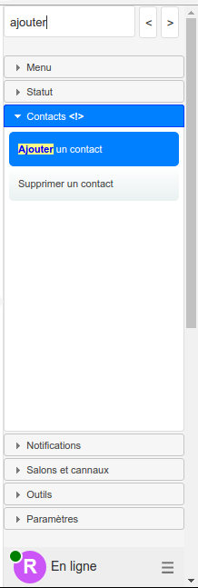

Prototype JSXC / Etherpad / Openfire
| Nom | Valeur |
|---|
JSXC est un client XMPP distribué sous licence MIT. A utiliser de préférence avec Firefox et Chrome / Chromium.
Connexion
- Choisissez un compte
- Cliquez sur le bouton "Connexion au client JSXC"
- Ouvrez et refermez JSXC en cliquant sur la barre de fermeture transparente à la droite de l'écran
Ajouter un contact
Pour communiquer avec quelqu'un vous devez d'abord l'ajouter à vos contacts:
Menu > Ajouter un contact > Saisir le login du contact
Discuter
Pour discuter avec quelqu'un, ajoutez le à vos contacts puis cliquez sur son nom à droite de l'écran. Si vous utilisez Chrome ou Firefox vous pouvez essayer de démarer une vidéo conférence. Cliquez sur l'icône en forme de caméra en haut de l'espace de conversation.
Cette fonctionnalité n'est pas encore correctement configurée, les connexions échouent selon la configuration réseau.
Présentation
Etherpad est un outil qui permet de créer et d'éditer des documents texte en temps réel.
Les pads sont sauvegardés automatiquement, peuvent être embarqués facilement et manipulés par une API !
Créer un pad
Nom du pad: